Acrux waypoint mission and BeetleBot security patrol
Two ROS 2 robots, each taken from simulation to a working run on hardware. Acrux drives a delivery-style mission on Nav2, stopping at each waypoint until the operator confirms. BeetleBot patrols a floor divided into zones, picks the most overdue one with a weighted score and warns when something moves.
What I know
ROS 2, by the parts I have used
Each item below is something I used hands-on, in the two projects or in the Autonomous Mobile Robots lab.
Core graph
Nodes, topics, services, actions, parameters, launch files, QoS. Built my own colcon workspace and overlaid it from .bashrc, registered nodes as console-script entry points, and ran ROS across Wi-Fi on a shared ROS_DOMAIN_ID. I read action status topics directly when a message type would not decode across distros.
Robot bring-up and driving
SSH into a robot, run its bringup, arm it through the safety gate and drive it with velocity commands on /cmd_vel_nav. Traced a square path from timed commands, which showed how speed and duration turn into distance and angle.
Navigation with Nav2
SLAM, a saved map, AMCL localisation and Nav2 goals, first on TurtleBot3 in Gazebo and then on Acrux. Global and local costmaps, NavigateToPose goals, collision monitor, and waypoint stand-off distances sized for a robot about 0.8 m wide.
Mapping and frames
tf2 trees from map to laser, diagnosing a flipped LiDAR mount, Cartographer and SLAM Toolbox for building maps, explore_lite for autonomous mapping, and saving maps with the Nav2 map saver.
Perception and fusion
A LiDAR node that turns the robot away from anything inside 0.5 m, and HSV colour detection with OpenCV and cv_bridge (green forward, red stop, blue back). In the patrol, scan differencing, frame differencing and IMU/odometry checks combine into one motion warning that suppresses false alarms while the robot moves.
Simulation and manipulation
Gazebo worlds with diff-drive and LiDAR plugins, TurtleBot3 spawning, and a mobile pick-and-place: a Waffle Pi with an OpenMANIPULATOR-X arm driven through ros2_control with FollowJointTrajectory and GripperCommand action clients. RViz layouts, and rosbag2 recording with a PASS/FAIL checker per topic.
Reactive control without ROS
A 4WD Arduino car that follows a black line with three IR sensors and stops about 20 cm from an obstacle using a servo-mounted ultrasonic sensor, then resumes. A useful contrast with the ROS robots: same sense-act idea, no middleware.
Engineering habits
Decision logic lives in pure Python with no ROS imports, so it is tested in under a second. Config is validated and unknown keys are rejected. Simulation runs on an isolated ROS domain so it cannot reach a real robot. Code is deployed to the robot over SSH without touching its own packages.
Setup
Ubuntu and ROS 2 versions
| Machine | Ubuntu | ROS 2 | Used for |
|---|---|---|---|
| Lab laptop (x86-64) | 22.04 LTS "Jammy" | Humble | Development, RViz2, Gazebo Classic simulations, the mission and patrol GUIs |
| Acrux, Intel NUC i3 | 22.04 LTS "Jammy" | Humble | Robot drivers, micro-ROS agent, SLAM and Nav2 |
| BeetleBot, Raspberry Pi 5 | 24.04 LTS Server "Noble" (ARM64) | Jazzy | Robot drivers, EKF, SLAM Toolbox and Nav2 |
Acrux and the laptop share a distro. BeetleBot does not: the laptop runs Humble and the robot runs Jazzy. Both use DDS on the same ROS_DOMAIN_ID, so topics and services work across the gap. Where a message type changed between the two releases, the laptop reads the action status topics directly instead of relying on the newer type.
Project 1
Acrux waypoint mission
A delivery-style task. Acrux drives to four pre-decided spots, stops at each and waits until the operator says "yes", then returns home. It never guesses how many waypoints there are: the operator states the count for the day, and the same four surveyed spots serve a run of three or four.
The hardware
Acrux is an indoor autonomous mobile robot made by RigBetel Labs, with its ROS 2 Humble packages published on GitHub (VEEROBOT hosts the same package). Two computers split the work: an Intel NUC runs ROS 2 (sensor drivers, SLAM, Nav2), and an ESP32 runs the wheel PID loop and talks to the NUC over micro-ROS, publishing wheel ticks, wheel speeds and battery state.
The wheels limit top speed to about 0.52 m/s (100 RPM x π x 0.1 m); the mission caps navigation at 0.3 m/s. The status LEDs show progress: blue side lights when ROS is connected, yellow while driving to a goal, a green flash with a beep when a goal is reached, and all red when the E-stop is pressed. The RealSense matters because a 2D LiDAR sees only one horizontal slice and misses things like table edges.
Inside the robot
My diagram, drawn from the Acrux ROS 2 Humble README and my own sensor checks.
Acrux uses micro-ROS, so the ESP32 is a real ROS 2 node rather than a serial device behind a custom bridge. A micro-ROS agent on the NUC connects it to the rest of the graph, and its data shows up as ordinary topics:
- /wheel/ticks and /wheel/vel: encoder ticks and measured speed for all four wheels, ordered left-front, left-back, right-front, right-back.
- /battery/voltage and /battery/percentage: 25.2 V full to 19.8 V empty. The buzzer beeps every 2 minutes below 20 %, every minute below 15 %, and constantly when flat. Draining below 10 % can damage the pack.
- /pid/control: switches the wheel controller between off (0), fast (1), smooth (2) and super-smooth (3).
- /cmd_vel: the velocity command in, from Nav2, the joystick or my mission.
The bringup launch starts the LiDAR and RealSense drivers. An optional merged scan converts the RealSense point cloud into a laser scan and combines it with the LiDAR, so obstacles above or below the LiDAR's single slice still reach the costmap. On power-up the robot starts its own stack and shows its IP address on the display; development.sh stops that so your own launch files can run, and demo.sh restores it. The joystick can store goal poses and send the robot back to them, clear the costmap and change the PID mode.
From the Acrux documentation

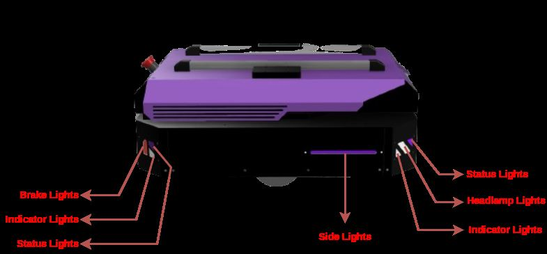

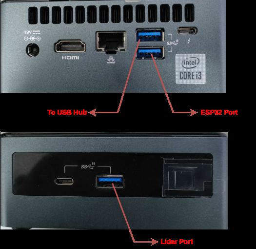

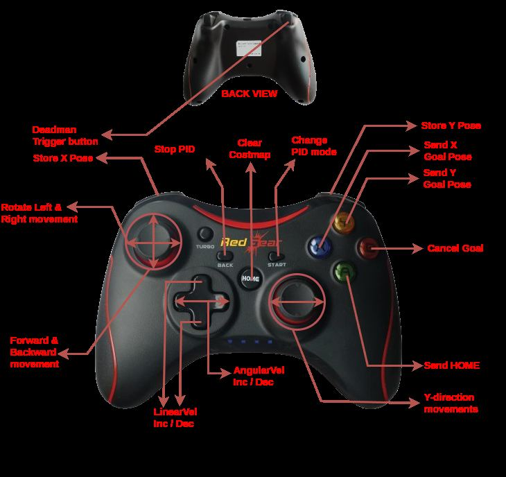

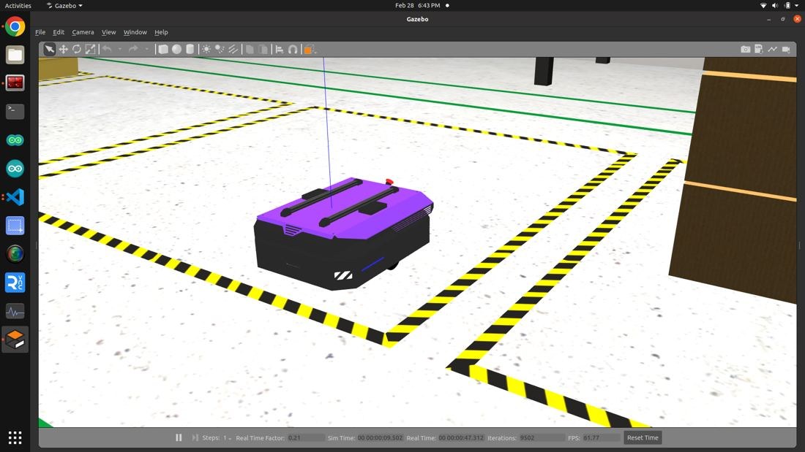
Images: RigBetel Labs, Acrux ROS 2 Humble README.
How it works
The state machine (mission.py) takes commands and Nav2 results in and gives actions out, with no ROS import, which is why it has 87 tests. A thin ROS node turns those actions into Nav2 goals. A collision monitor on the robot is the last line of safety, so a Wi-Fi drop on the laptop cannot disable it.
Simulation run
Gazebo room with a cylinder, a box and narrow corridors. Nav2 localised on a saved map and the real mission_node.py ran against it. The planner drove through the corridor to each spot in turn.

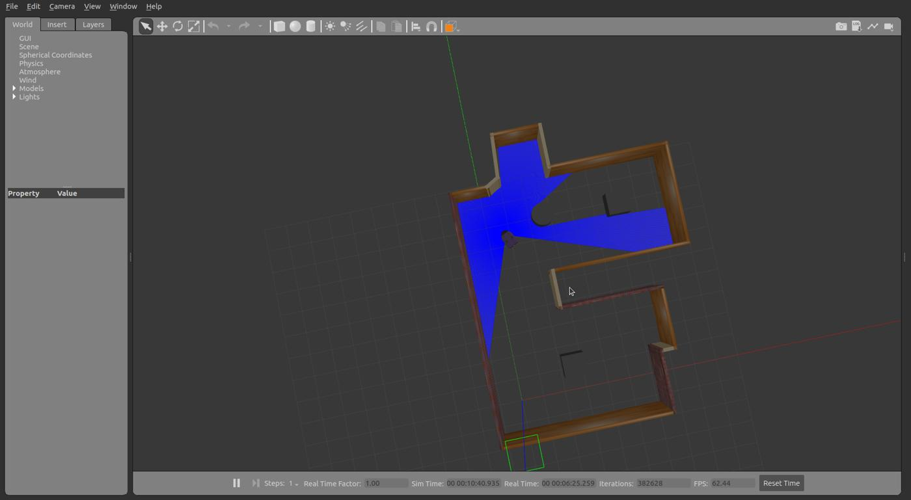

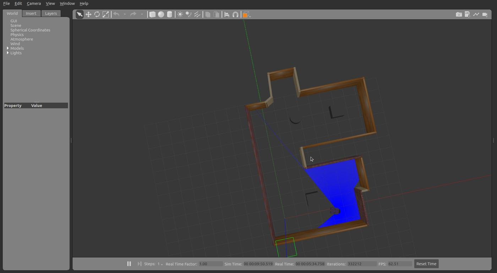

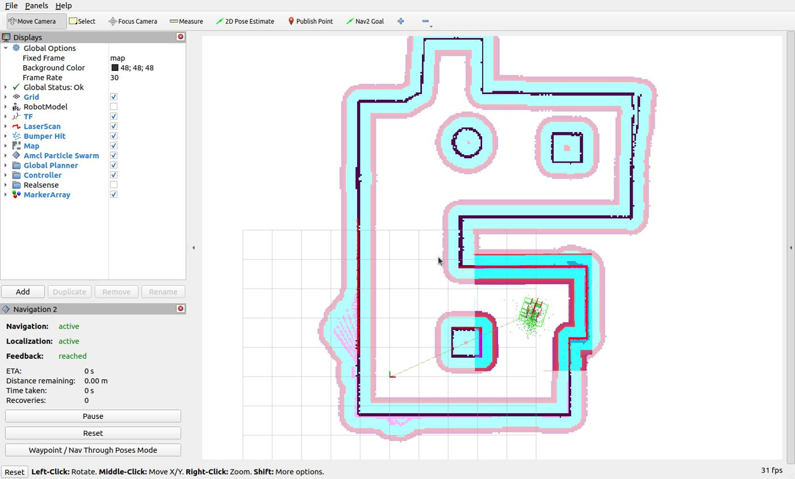

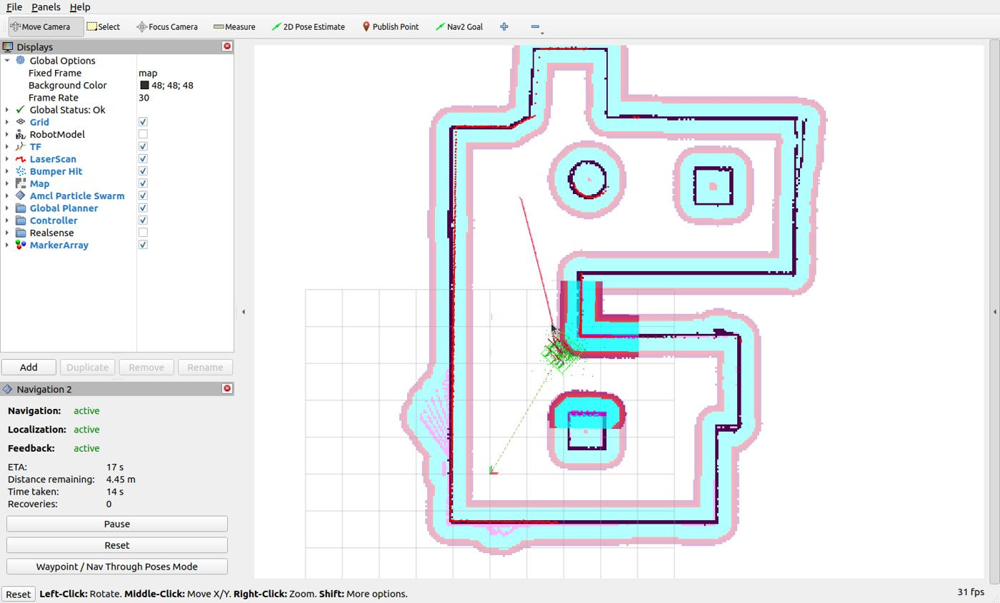

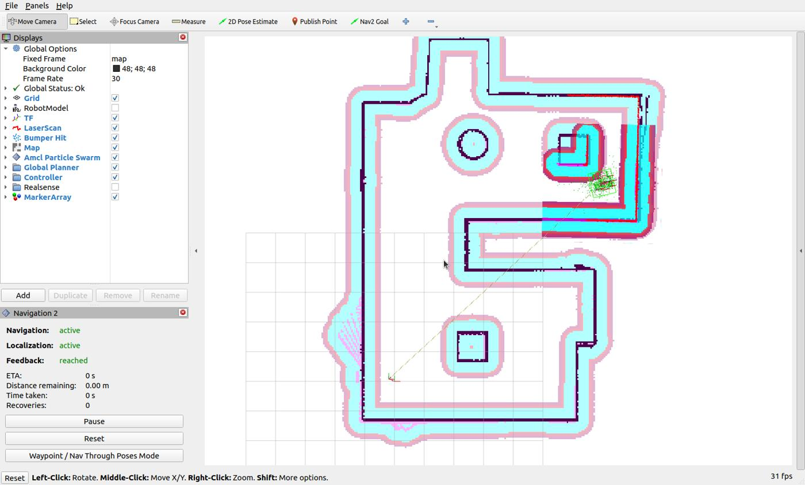

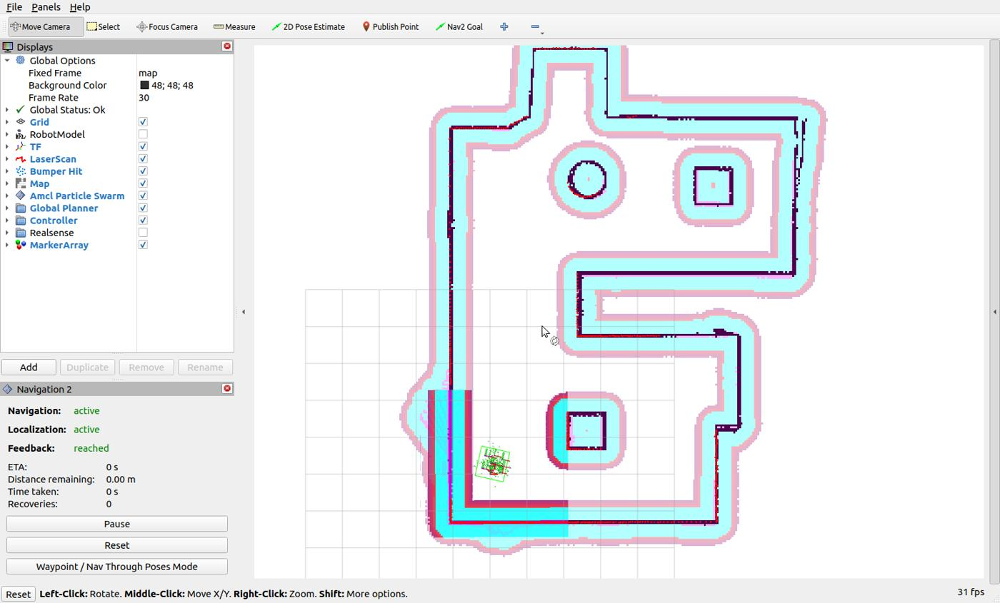
Physical robot

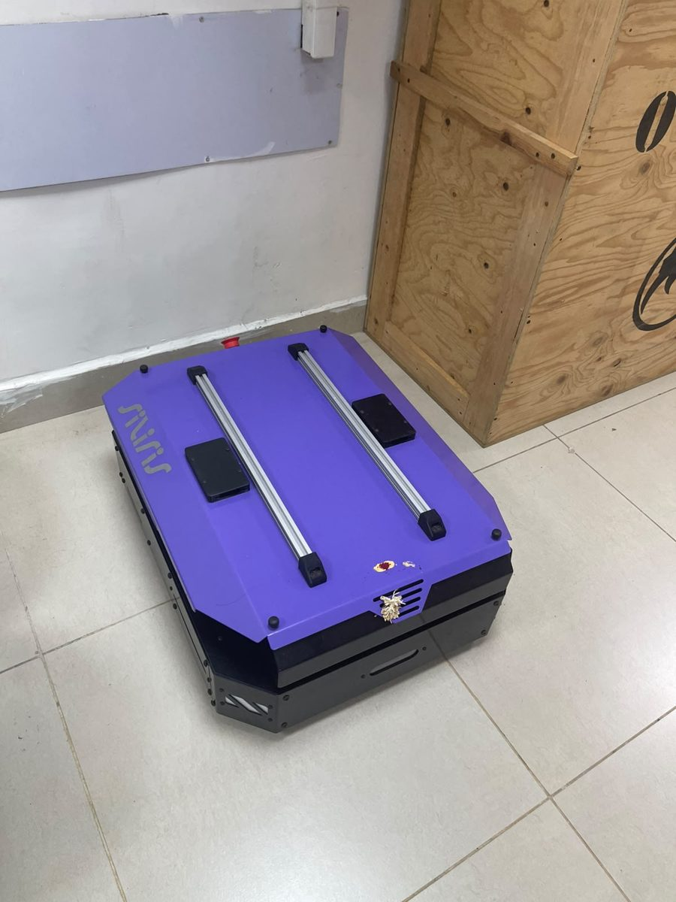

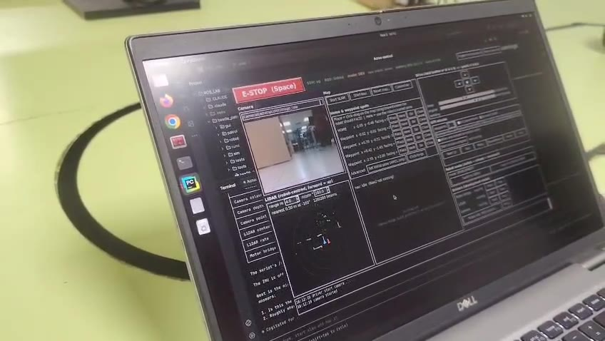

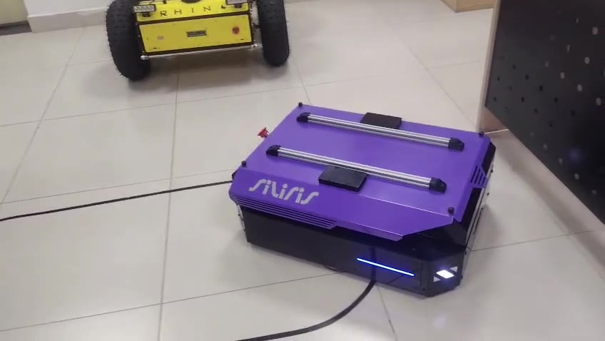
On the real Acrux I have brought up and checked the RealSense colour, depth and point cloud (about 14.5 Hz), the LiDAR (11.5 Hz), and the motor bridge. The full waypoint mission, Nav2 to all four spots and home with operator confirm, skip, retry and pause, is built, tested and done on the real robot.
Project 2
BeetleBot security patrol
A warehouse-style patrol for a Raspberry Pi 5 robot. The floor is divided into zones. Each zone shows how long ago the robot last visited it, as a heatmap that fades from green to red. The robot picks the most overdue zone with a weighted score, drives there with Nav2, and raises a warning when something moves.
The hardware
BeetleBot is a small 4-wheel ROS 2 robot from VEEROBOT. It also splits the work between two computers: a Raspberry Pi 5 runs ROS 2 (bringup, an EKF that fuses wheel odometry with the IMU, SLAM Toolbox, Nav2), and an STM32 board called "Lyra" runs the motors. Lyra boots disarmed, so the robot cannot move until it is armed over /lyra/arm, and it stops the wheels if velocity commands stop arriving.
Inside the robot
My diagram, drawn from the VEEROBOT BeetleBot documentation.
Linux on the Pi is not real-time: Wi-Fi, disk and display interrupts can delay any thread by tens of milliseconds. So the timing-critical work runs on Lyra, and the Pi does the planning. One velocity command travels like this:
- Nav2, the joystick or my patrol node publishes a velocity command (a Twist).
- cmd_vel_gate clamps it to 1.0 m/s and 2.0 rad/s, and drops it unless the robot is armed.
- lyra_bridge turns it into four wheel speeds, packs a binary packet with a CRC16 and sends it over UART3.
- Lyra checks the CRC and updates its target speeds. Its PID loop runs every 50 ms whatever arrives: it reads the encoders from hardware timers (no interrupts), compares with the target and sets the 20 kHz PWM.
- Lyra sends wheel speeds, ticks, IMU and battery back at 10 Hz. The odometry node and the EKF turn these into /odometry/filtered and the odom → base_link transform.
If the Pi stops sending, Lyra keeps the last speeds for 500 ms and then stops the wheels. Power is split the same way: the motors run straight from the 11.1 V battery through the drivers, a 5 V 5 A buck converter feeds the Pi, and the Pi's USB powers Lyra. From the power switch to ready takes about 90 s: Ubuntu boots, the bringup launch starts, Lyra completes its handshake, then odometry, the EKF and teleop come up.
| Safety layer | What it does | Reacts in |
|---|---|---|
| DRV8874 motor drivers | Overcurrent above 3.5 A per motor, thermal shutdown, under- and over-voltage lockout | microseconds |
| Lyra firmware | 500 ms command timeout, stall detection, fault-pin checks, 16.4 s watchdog | 50 ms |
| lyra_bridge | CRC and sequence checks on every packet | 100 ms |
| cmd_vel_gate | Speed clamp, armed check, emergency stop | about 10 ms |
| Mechanical | 16.3 cm ground clearance, battery BMS | always on |
From the BeetleBot documentation

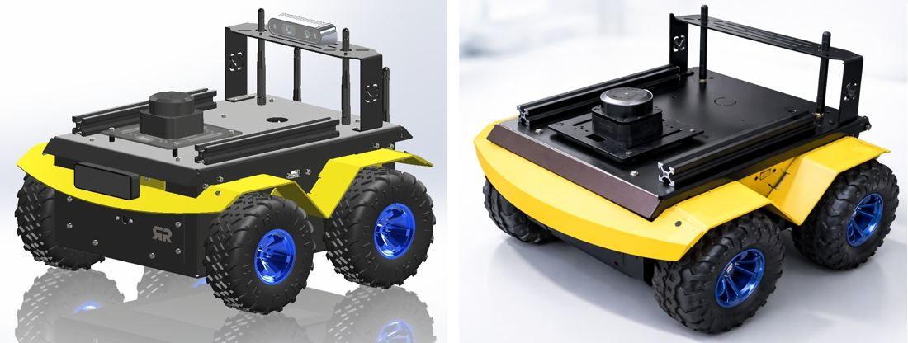
Images and figures: VEEROBOT, BeetleBot repository (GPLv3) and BeetleBot docs (MIT).
How it decides
Every choice is explained on screen: the decision table shows each zone's score broken into its four terms, and a log says why a zone was chosen or skipped (for example "visited too recently"). Weights can be changed live from sliders. The LiDAR score is halved while the robot turns, and the camera is ignored while it drives, which removes most false alarms.
Gazebo warehouse run
A 12 m x 9 m warehouse built in Gazebo: shelving racks, crates, barrels, a loading dock and an east door. A BeetleBot model publishes the same topics as the real robot, Nav2 localises on a map generated from the same geometry, and the unchanged patrol node and GUI run on top. A red intruder walks in through the door. In an 8 minute run the robot made 32 zone decisions with no failed goals, and the patrol raised 15 moving-object warnings.

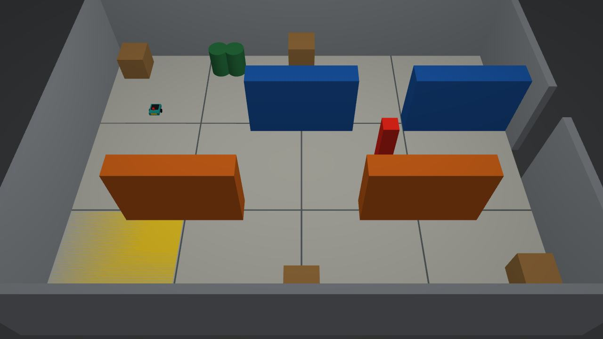

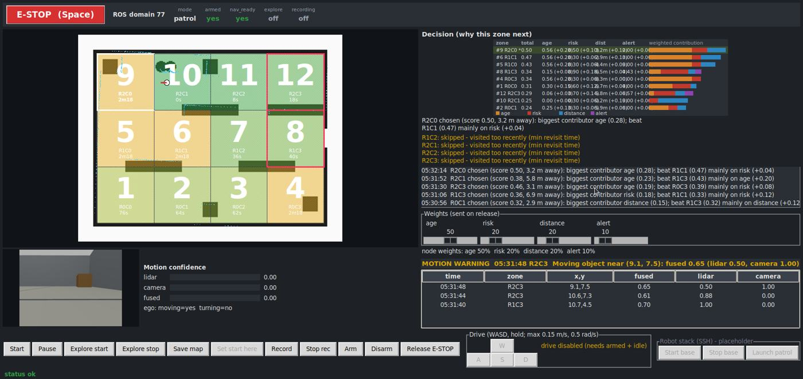

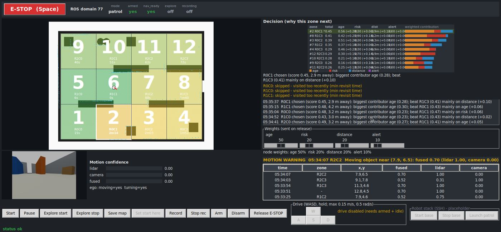

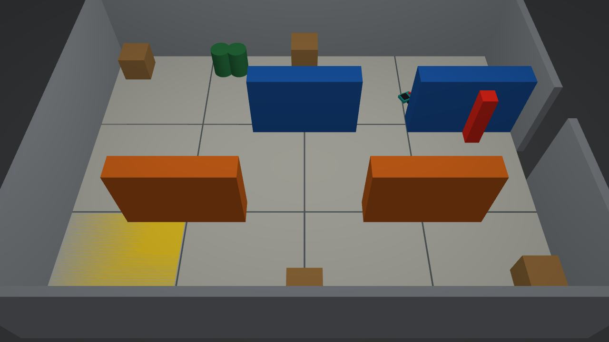
Lab-size simulation (3 m x 3 m)
A fake 3 m x 3 m robot, room and walking intruder publish the same topics as the real robot, on an isolated ROS domain. The real patrol node and GUI ran against it. The screenshots show the heatmap, the decision panel and the motion warnings.

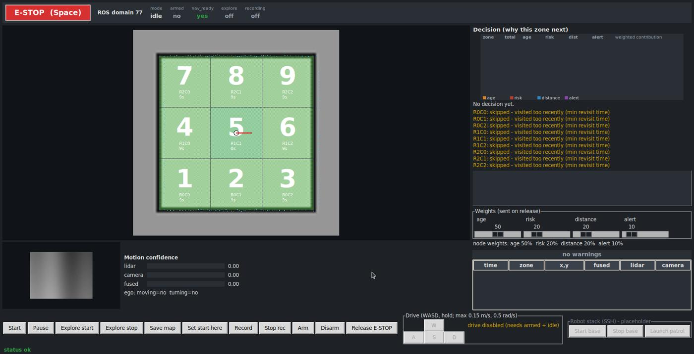

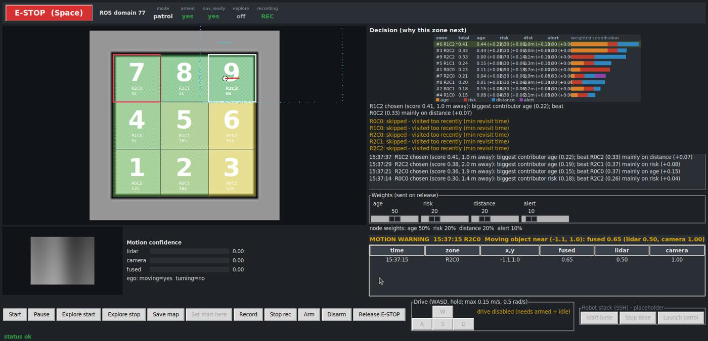

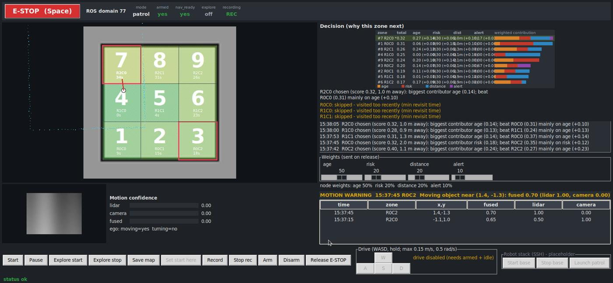

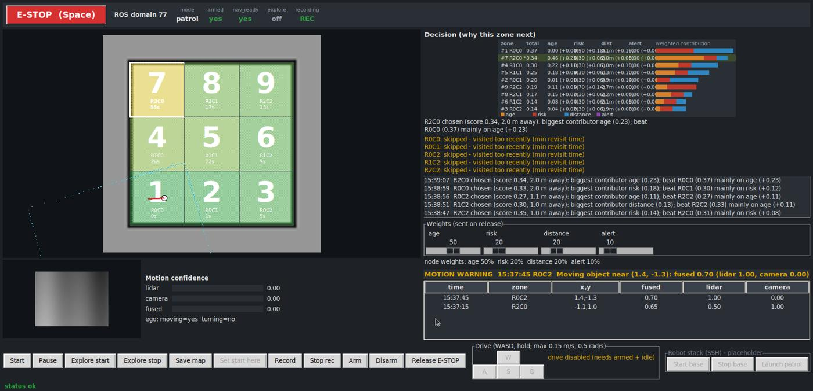
Physical robot

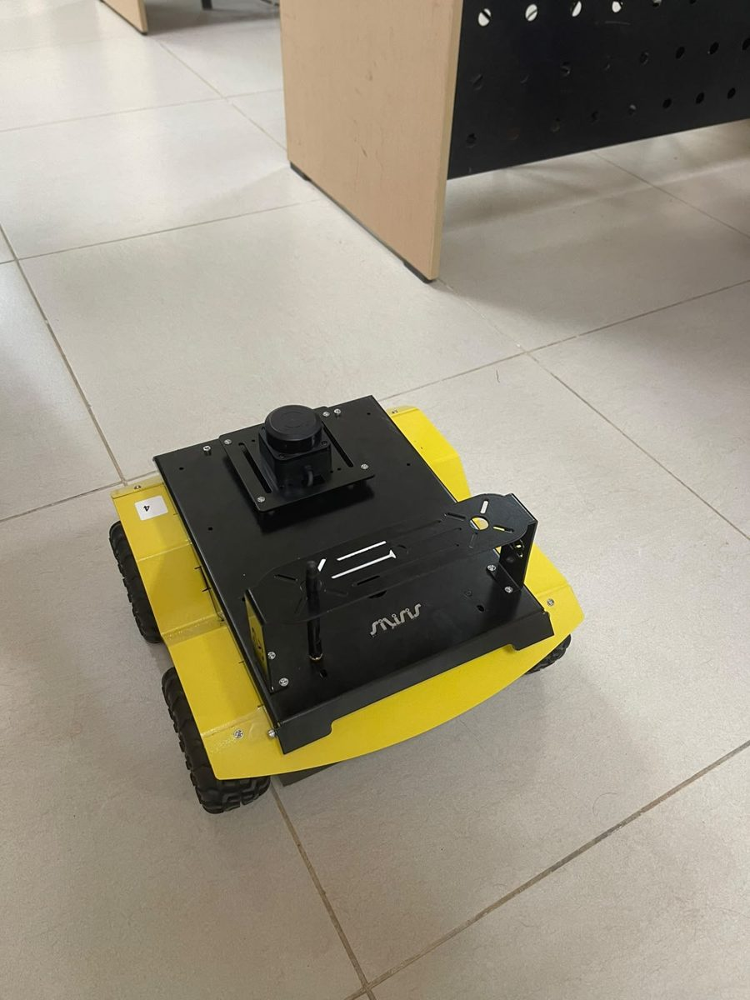

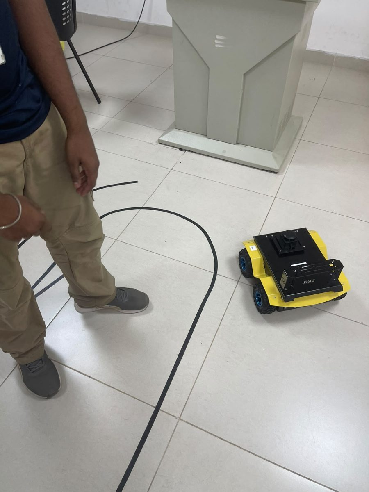
On the real robot I verified laptop to robot communication across ROS distros, arm and disarm, a safe motion test, the watchdog, the node and GUI running together, and zones turning green when the robot enters them. Along the way I found that another robot shared my ROS domain (every node showed twice) and moved mine to a private one.
Status
What is proven
| Item | Simulation | Real robot |
|---|---|---|
| Acrux: Nav2 drives to 4 waypoints and home | Done | Done |
| Acrux: operator confirm / skip / retry / pause | Unit tested | Done |
| Beetle: zone heatmap, priority choice, GUI | Done | Zones turn green on entry |
| Beetle: Nav2 goals and full patrol (autonomous mapping not simulated) | Done (Gazebo, real Nav2) | Done |
| Beetle: moving-object warning | Done | Done |